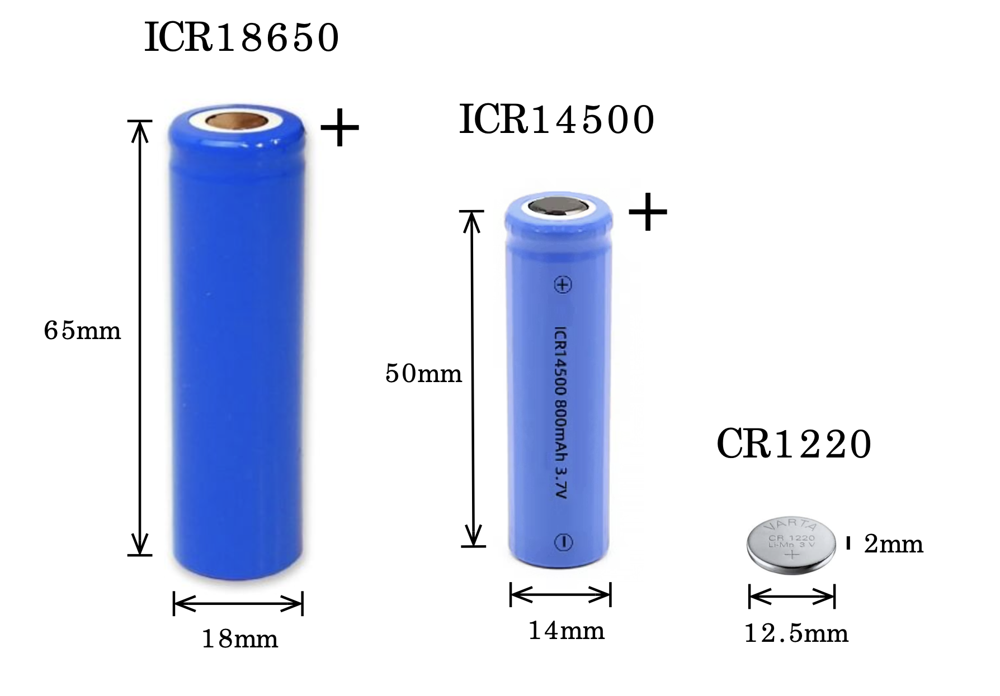

Guía de baterías y alimentación¶
Descripción general
El manejo energético es uno e los desafíos mas grandes del monitoreo automatizada en campo. Esta guía trata la elección de baterías y la interpretación de su voltaje y comportamiento.
Descripción general del sistema de baterías¶
Los registradores Riverlabs utilizan un sistema de dos baterías. La bateria principal sirve para la alimentación del sistema. Una peque$ntilde;a bateria tipo reloj garantiza conservación de la hora cuando la bateria principal no esta instalada.

Tamaños de batería 18650 y 14500, con opciones de composición LiPo y LiFePO4Alimentación principal: batería 18650 o 14500¶
Dependiendo del modelo, los registradores Riverlabs usan uno de dos tamaños de batería. Dientro de cada tamaño, existen diferentes tipos de composición quimica que se puede elejir dependiendo de sus necesidades y la disponibilidad local.
| Tipo de batería | Composición | Tensión nominal | Capacidad | Dimensiones | Notas |
|---|---|---|---|---|---|
| 18650 | Li-ion (polímero de litio) | 3.7 V | 2000–3000 mAh | 18 mm × 65 mm | La más común; gran capacidad |
| 18650 | LiFePO4 (fosfato de hierro y litio) | 3.2 V | 1500–2000 mAh | 18 mm × 65 mm | Más segura, mayor vida útil, menor tensión |
| 14500 | Li-ion (polímero de litio) | 3.7 V | 600–800 mAh | 14 mm × 50 mm | Más pequeña; menor capacidad |
| 14500 | LiFePO4 (fosfato de hierro y litio) | 3.2 V | 400–600 mAh | 14 mm × 50 mm | Más segura; menor tamaño |
Comparación de composiciones:
| Característica | Li-ion (3.7 V) | LiFePO4 (3.2 V) |
|---|---|---|
| Intervalo de tensión | 4.2 V (cargada)–3.0 V (agotada) | 3.65 V (cargada)–2.5 V (agotada). |
| Densidad energética | Mayor | Menor |
| Seguridad | Buena (con protección) | Excelente (muy estable) |
| Vida útil en ciclos | 300–500 ciclos | Más de 2000 ciclos |
| Tolerancia a la temperatura | -20°C a 60°C | -20°C a 60°C |
| Coste | Menor | Ligeramente mayor |
| Más adecuada para | Máxima autonomía | Fiabilidad a largo plazo y seguridad |
Información de seguridad importante:
Seguridad de las baterías
- ⚠️ Nunca utilice baterías dañadas o abolladas
- ⚠️ Compruebe la polaridad antes de insertarlas
- ⚠️ No las cargue por debajo de 0°C
- ⚠️ No las exponga a temperaturas superiores a 60°C
- ⚠️ Sustitúyalas si están hinchadas o presentan fugas
- ⚠️ Deséchelas correctamente (reciclaje de baterías)
Batería de respaldo: pila de botón CR1220¶
Especificaciones:
- Tipo: pila de botón de litio CR1220 (no recargable)
- Tensión nominal: 3.0 V
- Capacidad: ~40 mAh
- Finalidad: respaldo exclusivo del reloj de tiempo real
- Vida útil: normalmente de 5 a 10 años. Nota: cuando la bateria principal esta insertada, el reloj recibe poder de la batería principal y la batería de respalda no se descarga.
Función:
- Mantiene la hora del reloj cuando se retira la batería principal
- NO alimenta el registrador ni el sensor
- El registrador funciona sin ella (pero pierde la hora)
- Aplicaciones de telemetría obtienen la hora de in servidor del internet, y el uso de la bateria de respaldo no es necesario
Interpretación de la tensión de la batería¶
Comprender la tensión de la batería ayuda a estimar la autonomía restante y a detectar problemas.
Tensión y estado de carga¶
La tensión de la batería indica la capacidad restante, pero los intervalos de tensión son diferentes para LiPo y LiFePO4:
Baterías LiPo (tensión nominal de 3.7 V)¶
| Tensión | Estado de carga | Estado | Acción |
|---|---|---|---|
| 4.20 V | 100% | Nueva/totalmente cargada | Óptimo |
| 4.10 V | ~95% | Excelente | Funcionamiento normal |
| 4.00 V | ~85% | Muy bueno | Funcionamiento normal |
| 3.90 V | ~75% | Bueno | Funcionamiento normal |
| 3.80 V | ~60% | Aceptable | Supervisar |
| 3.70 V | ~45% | Nominal | Planificar sustitución |
| 3.60 V | ~30% | Bajo | Sustituir pronto |
| 3.50 V | ~20% | Muy bajo | Sustituir de inmediato |
| 3.40 V | ~10% | Crítico | Sustituir ahora |
| 3.30 V | ~5% | Emergencia | Fallo inminente |
| 3.00 V | 0% | Agotada | El registrador puede detenerse |
| <3.00 V | Sobredescargada | Dañada | La batería podría haberse estropeado |
Baterías LiFePO4 (tensión nominal de 3.2 V)¶
| Tensión | Estado de carga | Estado | Acción |
|---|---|---|---|
| 3.65 V | 100% | Nueva/totalmente cargada | Óptimo |
| 3.40 V | ~95% | Excelente | Funcionamiento normal |
| 3.30 V | ~75% | Muy bueno | Funcionamiento normal |
| 3.25 V | ~50% | Bueno | Funcionamiento normal |
| 3.20 V | ~40% | Aceptable | Supervisar |
| 3.10 V | ~20% | Bajo | Sustituir pronto |
| 3.00 V | ~10% | Muy bajo | Sustituir de inmediato |
| 2.90 V | ~5% | Crítico | Sustituir ahora |
| 2.70 V | ~2% | Emergencia | Fallo inminente |
| 2.50 V | 0% | Agotada | El registrador se detendrá |
| <2.50 V | Sobredescargada | Dañada | La batería podría haberse estropeado |
Curva de descarga más plana
Las baterías LiFePO4 mantienen la tensión más estable durante la descarga. Se mantienen alrededor de 3.2–3.3 V durante la mayor parte de su capacidad y después caen rápidamente al agotarse.
Lectura de la tensión de la batería¶
En los datos del registrador:
- La tensión se registra en cada medición
- Normalmente figura en la última columna del archivo de datos
- Se expresa en milivoltios (p. ej., 3850 = 3.85 V)
Ejemplo de línea de datos:
2025/12/27 14:30:00, 1250, 1248, 1252, 1249, 1251, 1250, 1248, 1251, 1249, 1250, 3850
^^^^
Battery voltage (mV)
Con un multímetro:
- Ajuste el multímetro para medir tensión continua
- Acceda a los terminales de la batería (puede requerir abrir el registrador)
- Coloque la punta roja en el terminal +
- Coloque la punta negra en el terminal -
- Lea la tensión (debería indicar 3.0–4.2 V)
Caída de tensión durante la medición
La tensión desciende brevemente durante una medición activa debido a la elevada demanda de corriente. La tensión registrada suele medirse durante el reposo (lo que permite estimar la capacidad con mayor precisión).
La primera lectura puede ser baja
En algunos registradores, la primera lectura de tensión tras encenderlos puede ser inferior a las siguientes. Esto ocurre porque los condensadores del circuito de medición aún no se han cargado por completo. Las lecturas posteriores mostrarán la tensión correcta una vez que el circuito se estabilice (normalmente después de la segunda o tercera medición).
Carga solar¶
Especificaciones del panel solar¶
Quimica de la bateria
El circuio de carga por panel solar solo es compaitble con baterías Li-Ion de 3.7 V
Configuración solar habitual:
- Panel: 5–10 W, 6 V
- Cable: resistente a la intemperie, con alivio de tensión
- Montaje: ajustable según el ángulo del sol
Limitaciones de la carga solar
- Solo carga por encima de 0°C (desactivación automatica debajo de 0°C
- Requiere buena exposición al sol; no es adecuada para lugares con mucha sombra
- Puede no ser suficiente para compensar el consumo de la telemetría
Almacenamiento de baterías¶
Almacenamiento a largo plazo¶
Condiciones óptimas de almacenamiento:
- Voltaje: 3.7–3.8 V para LiPo (50 % de carga) o 3.2–3.3 V para LiFePO4
- Temperatura: 15–20°C
- Humedad: <60%
- Lugar: fresco, seco y alejado de objetos metálicos
Duración del almacenamiento:
Baterías LiPo:
| Tensión durante el almacenamiento | Tiempo de autodescarga hasta 3.0 V |
|---|---|
| 4.2 V (cargada) | ~12–18 meses |
| 3.8 V (50%) | 18–24 meses |
| 3.4 V (baja) | 6–12 meses |
Baterías LiFePO4:
| Tensión durante el almacenamiento | Tiempo de autodescarga hasta 2.5 V |
|---|---|
| 3.65 V (cargada) | ~18–24 meses |
| 3.2 V (50%) | 24–36 meses |
| 2.9 V (baja) | 12–18 meses |
Revise las baterías almacenadas
Las baterías almacenadas deben revisarse cada 3–6 meses.
- Li-Ion: recargue hasta 3.7–3.8. V si la tensión es inferior a 3.4 V
- LiFePO4: recargue hasta 3.2–3.3 V si la tensión es inferior a 2.9 V
Eliminación¶
¡Nunca tire las baterías a la basura común!
Eliminación adecuada:
- Descárguelas hasta <3,0 V (utilícelas en el registrador hasta agotarlas)
- Cubra los terminales con cinta aislante
- Llévelas a un punto de reciclaje de baterías
- Muchos comercios aceptan baterías 18650 para su reciclaje
- Consulte los servicios locales de recogida de residuos peligrosos
Resolución de problemas de alimentación¶
El registrador no se enciende¶
Compruebe:
- Tensión de la batería >3.3 V
- Polaridad correcta de la batería
- Contactos de la batería limpios y con buen contacto
- Ausencia de daños físicos en el registrador
- Pruebe una batería que sepa que funciona
Descarga rápida de la batería¶
Posibles causas:
| Síntoma | Causa probable | Solución |
|---|---|---|
| Una batería nueva se agota en días | Telemetría excesiva o fallo al entrar en modo de reposo | Reduzca la frecuencia de telemetría y vuelva a cargar el firmware |
| Empeoramiento gradual | Envejecimiento de la batería | Sustituya la batería |
Errores en la lectura de tensión¶
Lecturas de tensión inconsistentes:
- Mal contacto: limpie los terminales
- Problema del código: vuelva a cargar el firmware
- Batería agotándose: sustitúyala
No se registra la tensión:
- Compruebe el formato del archivo de datos
- Compruebe que el código mida la tensión
- Pruebe el ADC con un multímetro
Próximos pasos¶
- Componentes internos: Conozca el hardware de su registrador
- Guía de mantenimiento: Procedimientos de mantenimiento periódico
- ThingsBoard: Supervise la tensión de la batería a distancia
- Resolución de problemas: Problemas de alimentación
Gestión de energía dominada
Con una selección, supervisión y optimización adecuadas de las baterías, sus registradores pueden funcionar de forma fiable durante varios años con una sola carga.